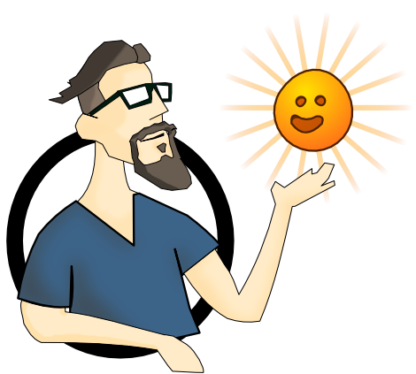

How?
In order to progress we will need two different kinds of people collaborating.
- 
-
Quality of life providers
Quality of life providers are people who help to improve everyone’s life but don't specifically provide resources: cooks, accountants, doctors... Without them, relieving members of their everyday burdens would be impossible.

-
Resource providers
Resource providers will first be producing money to sustain the rest of the community. Once the community is stable enough, anyone with the ability to provide resources such as energy, food or shelter will also be a resource provider. Other resource providers could include IT experts working remotely, farmers, etc.